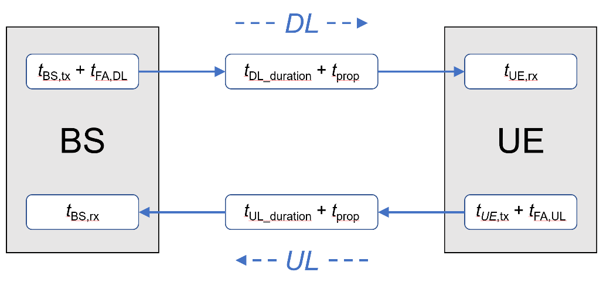

Requirement
| Min Requirement | Value (ms) | Eval Result (ms) |
|---|---|---|
| User Plane (UL) | 10ms |
|
| Control Plane (UL) | 40ms |
Satellite parameters
The satellite is assumed at an orbit height of
User Plane Latency
User plane latency is the contribution of the radio network to the time from when the source sends a packet to when the destination receives it (in ms). It is defined as the one-way time it takes to successfully deliver an application layer packet/message from the radio protocol layer 2/3 SDU ingress point to the radio protocol layer 2/3 SDU egress point of the radio interface in either uplink or downlink in the network for a given service in unloaded conditions, assuming the mobile station is in the active state.
The evaluation of NR satellite access user plane latency is based on the procedure illustrated in Figure

For the NR satellite access user plane latency evaluation, the following assumptions are considered:
-
It is assumed that the packet arrives at any time of any OFDM symbol. For the maximum symbol alignment time, one symbol length is added at the beginning of the procedure.
-
The transmission of PDCCH, PDSCH, PUCCH, PUSCH cannot be across the slot. Otherwise, the transmission will wait for the next slot.
-
The PDSCH/PUSCH allocation assumes slot-based scheduling.
-
Resource mapping type A is considered.
-
UE processing capability 1 is considered.
-
The subcarrier spacing is 15 kHz.
-
It is assumed that PDCCH monitoring occasion occurs at every OFDM symbol in the evaluation.
-
It is assumed that HARQ feedback is disabled, i.e., packet retransmissions are not considered.
-
It is assumed that an initial error probability is 0.
-
It is assumed that satellite on-board delay can be considered negligible.
-
Grant-free allocation is assumed in uplink.
The DL and UL user plane latency for NR satellite access can be viewed in the following table.
| Description | Duration (ms) |
|---|---|
| Initial symbol alignment | 0.0714 |
| gNB processing delay: tBS,tx=Tproc,2/2, where Tproc,2 is defined in TS 38.214, Section 6.4, with N2=10 , d2,1=d2=d2,2=Text=Tswitch=0 and κ=64. | 0.3568 |
| Downlink frame alignment, assuming 1 ms slot duration: tFA,DL | 1 |
| TTI for downlink data packet transmission: tDL_duration | 1 |
One way propagation delay: tprop=RTD/2, where RTD= |
|
| UE processing delay: |
0.2854 |
| Total one-way user plane latency: T1 = |
Control Plane Latency
According to Report ITU-R M.2514, control plane latency refers to the transition time from a most “battery efficient” state (e.g. Idle state) to the start of continuous data transfer (e.g. Active state). In the context of 5G NR satellite access, the respective states are RRC_IDLE or RRC_INACTIVE and RRC_CONNECTED. The control plane latency is evaluated from RRC_INACTIVE to RRC_CONNECTED transition. The following additional assumptions are considered in the evaluation:
- Resource mapping type A is assumed.
- UE processing capability 1 is assumed.
- The subcarrier spacing is 15 kHz.
- 2-step random access is used.
- Satellite on-board delay is considered negligible.
The calculation of the control plane latency, for 15 kHz SCS in downlink and uplink directions is provided the following table, based on the above assumptions.
Satellite parameters
The satellite is assumed at an orbit height of
The DL and UL user plane latency for NR satellite access can be viewed in the following table.
| Description | Duration (ms) |
|---|---|
| Delay due to RACH scheduling period. It is assumed that the transition procedure begins from the transmission of RACH preamble, thus RACH scheduling period can be ignored. | 0 |
| UE processing delay: |
0.3568 |
| Transmission of RACH preamble: ttx,preamble | 1 |
| PRACH-to-PUSCH offset: tPUSCH_offset Given that the RACH preamble transmission is 14 symbols and the minimum time between PRACH and PUSCH for MsgA is 2 OFDM symbols for μ=0, at least one slot offset should be considered between PRACH and PUSCH, as defined by msgA-PUSCH-TimeDomainOffset. | 1 |
| Transmission of PUSCH payload: ttx,PUSCH | 1 |
One way propagation delay: tprop=RTD/2, where RTD= |
|
| MsgA detection and processing delay in gNB (preamble, L2 and RRC): tBS,rx | 3 |
| Transmission of MsgB: ttx,MsgB | 1 |
One way propagation delay, gNB 🡪 UE: tprop=RTD/2 |
|
| UE processing delay of RRC Resume, including RA Response: tUE,rx | 7 |
| Transmission of RRC Resume Complete and data | 0 |
| Total control plane latency: T1 = |